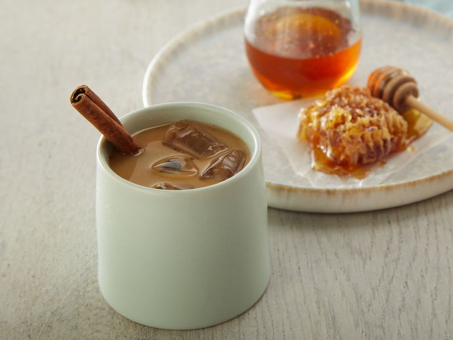

Home

Iced Cinnamon Honey Latte
Description
The sweet blending of honey, cinnamon, and vanilla make up this delicious almondmilk latte
Ingredients
- 1 1/4 cups almondmilk
- 2 tsp sweet creme almondmilk creamer
- 3 Tbsp water
- 3 Tbsp honey
- 2 cinnamon sticks
- 1/4 tsp vanilla extract
- ice cubes
- 4 shots espresso, cooled
Directions
- Combine water, honey and cinnamon sticks in a small saucepan. Bring to a boil, reduce heat to low, and simmer, about 5 minutes. Remove from heat and stir in vanilla extract. Allow to cool completely and strain.
- Fill 2 glasses with ice cubes. Add espresso shots to each glass and top with equal amounts of cinnamon honey syrup. Add Almondmilk and Sweet Crème Almondmilk Creamer to each glass. Serve.